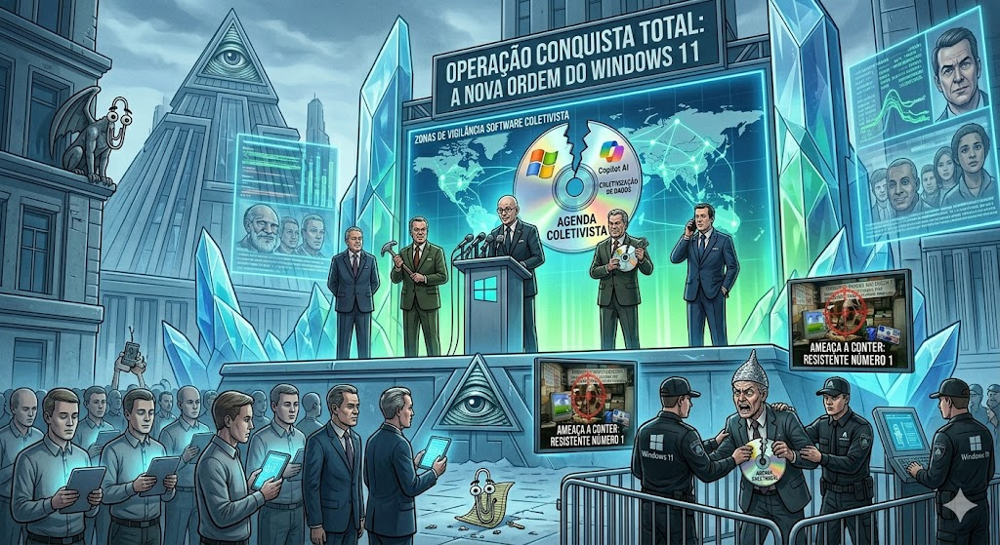
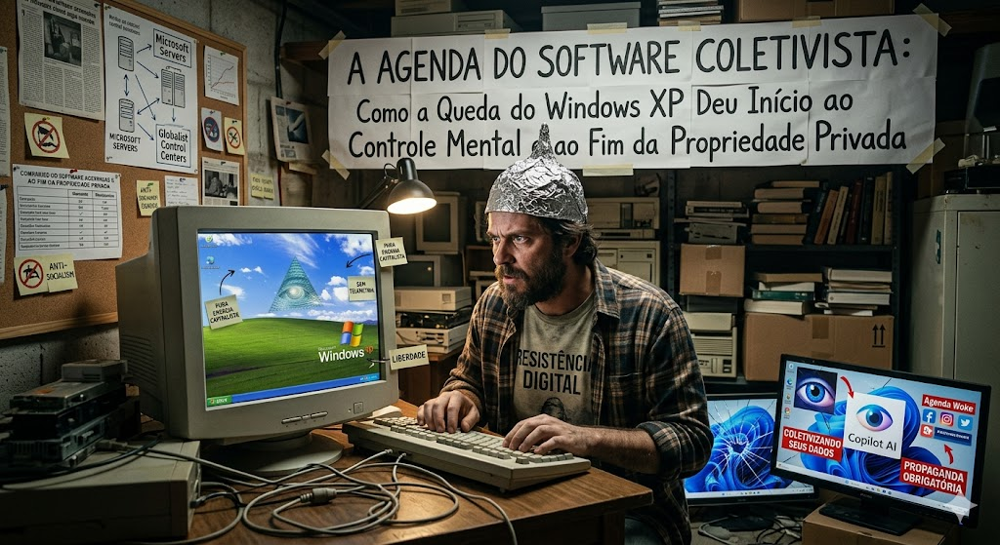

Provas:
A AGENDA DO SOFTWARE COLETIVISTA: Como a Queda do Windows XP Deu Início ao Controle Mental e ao Fim da Propriedade Privada
Saudações, patriotas da resistência digital. Se você achava que a transição do Windows XP para as versões mais novas foi apenas uma "evolução tecnológica natural", você caiu na maior armadilha de engenharia social do século.
A grande mídia da tecnologia, financiada pelas elites globalistas que adoram ditar como você deve viver, destruiu o Windows XP por um motivo muito claro: ele era capitalista, individualista e livre. O XP defendia a propriedade privada absoluta. O que veio depois? Uma transição sutil para um modelo de "Socialismo Digital", onde você não possui nada, tudo pertence à corporação, e o seu sistema operacional funciona como um fiscal ideológico de repartição pública.
Aqui estão as PROVAS de como transformaram o seu computador em um comitê de propaganda e monitoramento estatal:
Do Capitalismo de Raiz ao "Você Não Terá Nada e Será Feliz"
No Windows XP, você ia até a loja, comprava a caixa com o CD, digitava a sua chave de ativação e o sistema era seu. Propriedade privada sagrada. Hoje, com o Windows 11,eles implementaram o conceito de "Software como Serviço". Você precisa de uma conta online obrigatória, os seus arquivos são jogados à força para a "Nuvem" (que nada mais é do que o computador do Estado/Corporação) e eles podem revogar o seu acesso quando quiserem. É a coletivização dos seus dados.
Engenharia Social e a "Cultura Woke" no Menu Iniciar
Repare no tom das notificações e do assistente de inteligência artificial (Copilot) nos sistemas modernos. O tom é sempre aquele cinismo corporativo, falsamente acolhedor, idêntico ao discurso de burocratas de universidades de esquerda. Eles enfiam notícias mastigadas de portais progressistas diretamente no seu widget de buscas. Você não pediu para ver propaganda ideológica enquanto tenta abrir um documento de texto, mas Eles precisam moldar o seu pensamento diário através do cansaço visual.
A Central de Telemetria (O Grande Irmão Estatista)
Sob o pretexto politicamente correto de "melhorar a experiência do usuário através da cooperação de dados" (a clássica desculpa coletivista para roubar o que é seu), os Windows modernos rastreiam cada clique. No Windows XP, o sistema trabalhava para você, isolado, soberano. Hoje, o seu PC gasta mais processamento enviando relatórios de comportamento para os servidores centrais do que executando as suas tarefas. É a vigilância estatal privatizada.

TABELA COMPARATIVA DA SUBMISSÃO DIGITAL
Para os céticos que ainda acham que isso é paranoia, vejam os dados frios de como a soberania do indivíduo foi esmagada após a morte do Windows XP:
| Métrica de Liberdade Individual | Era de Ouro (Windows XP) | Era do Controle Coletivista (Windows 10 / 11) |
|---|---|---|
| Conceito de Propriedade | Propriedade Privada: O software é seu, roda localmente e ninguém interfere. | Comodato/Nuvem: Você é apenas um inquilino sob constante ameaça de termos de uso. |
| Acesso ao Sistema | Soberano: Conta local, anônima, sem necessidade de internet ou CPF digital. | Identidade Centralizada: Conta Microsoft obrigatória vinculada aos seus dados reais. |
| Doutrinação na Interface | Zero: O Menu Iniciar continha apenas os programas que você decidiu instalar. | Alta: Anúncios de jogos casuais, notícias de portais alinhados e sugestões baseadas em IA. |
| Uso da CPU/Hardware | 100% focado no Produtor: Cada ciclo de processamento servia ao seu trabalho. | Imposto de Processamento: Parte da sua máquina trabalha para rodar spywares de telemetria. |
| Assistente Virtual | Clippy / Dogzinho: Assistentes locais, bobos, que não coletavam dados psicológicos. | Copilot / Cortana: Algoritmos de IA treinados por engenheiros sociais para monitorar e guiar sua linha de raciocínio. |
| Resistência a Sinais Externos | Alta: Rodava perfeitamente em PCs blindados sem conexão. | Nula: Se desligar a internet, o sistema "reclama" e sabota suas próprias funcionalidades. |
Conclusão:
Não se deixem enganar pelos painéis bonitinhos e pelas promessas de "inclusão digital". Cada atualização do Windows moderno é uma regulamentação estatal disfarçada sobre o seu direito de pensar e computar. Voltem para o XP. Bloqueiem as portas de rede. Protejam suas mentes da doutrinação de silício.
A resistência começa no Boot!
